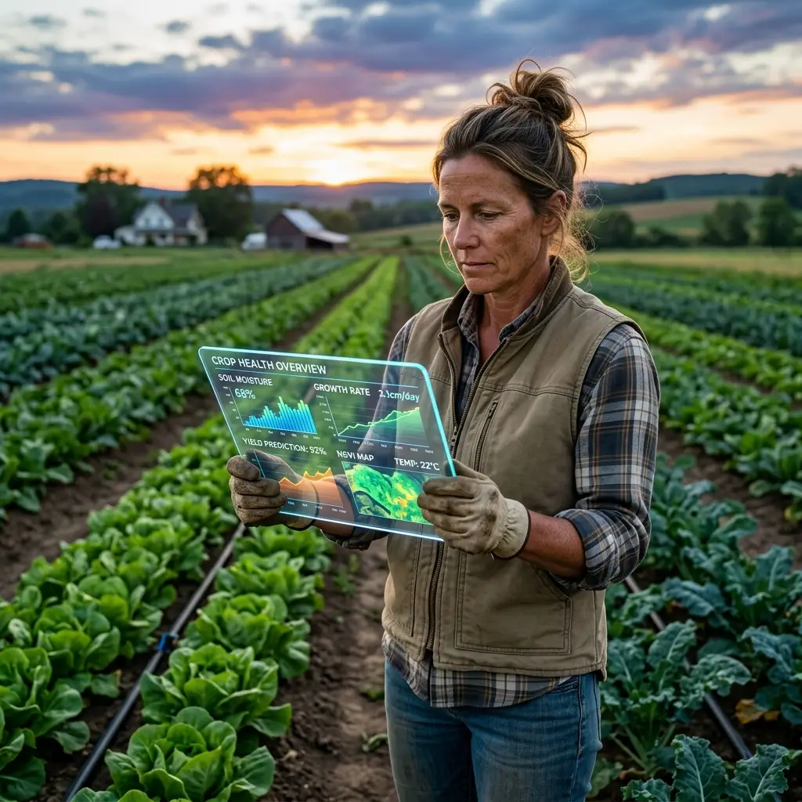
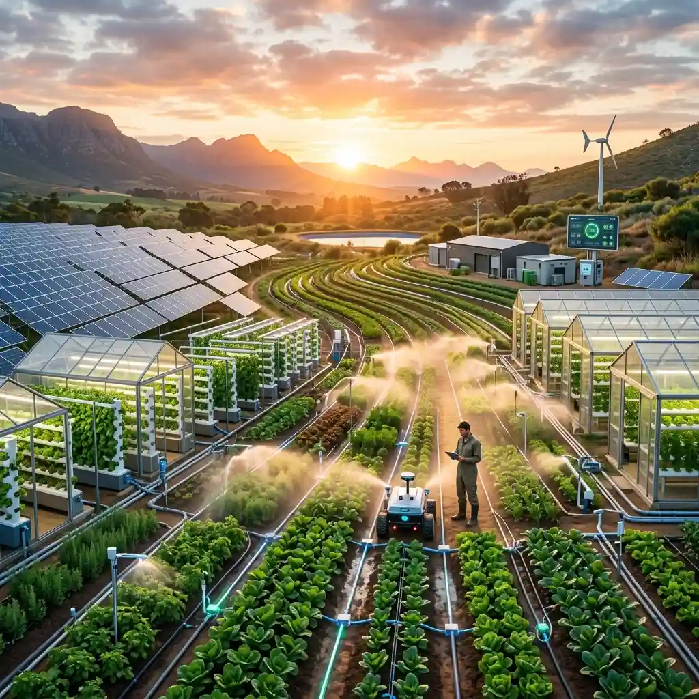

Discover the latest trends, research, and stories driving the future of sustainable agriculture forward.
Artificial Intelligence is no longer just for tech giants. Discover how machine learning models and drone imagery are helping farmers increase yield while reducing chemical usage by up to 30%.
Read Full ArticleWe spent a month with farmers utilizing state-of-the-art precision agriculture tools to understand the ROI and the environmental impact of these technologies. The results are astounding.
Explore the Report
Healthy soil means healthy crops. A look into how microbiome diversity boosts resilience against pests.
Read MoreWith changing climates, saving water is critical. Here are 5 irrigation methods changing the game.
Read MoreAn updated guide on how to apply for the latest agricultural support funds available to small farms.
Read MoreTreating your seeds with bio-stimulants before planting can accelerate germination by 15%.
Switching to solar pumps can reduce energy costs and provide consistent watering during peak sun hours.
Don't wait for a breakdown. Implementing a bi-weekly checklist prevents major harvest delays.
Alternate legumes with cereals to naturally replenish nitrogen levels in your soil without chemical fertilizers.
"The future of farming is not in fighting nature, but in understanding it and working alongside it with the best tools we have."
Listen to our weekly podcast where we interview industry leaders, farmers, and innovators about the future of agriculture.
Listen on Spotify


